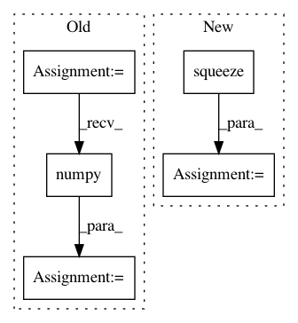

2ffbfa3a6bd3b8de8e21a762489346054dcd9ccc,nussl/separation/deep/deep_mask_estimation.py,DeepMaskEstimation,extract_features,#DeepMaskEstimation#,53
Before Change
(features["estimates"] + 1e-6) /
(input_data["magnitude_spectrogram"].unsqueeze(-1) + 1e-6)
).squeeze(0)
features = features.permute(3, 1, 0, 2)
features = features.data.cpu().numpy()
return features
def run(self, features=None):
After Change
// swap back batch and sample dims
if self.metadata["num_channels"] == 1:
embedding = embedding.transpose(0, -2)
embedding = embedding.squeeze(0).transpose(0, 1)
return embedding.cpu().data.numpy()
In pattern: SUPERPATTERN
Frequency: 4
Non-data size: 5
Instances
Project Name: interactiveaudiolab/nussl
Commit Name: 2ffbfa3a6bd3b8de8e21a762489346054dcd9ccc
Time: 2020-03-12
Author: prem@u.northwestern.edu
File Name: nussl/separation/deep/deep_mask_estimation.py
Class Name: DeepMaskEstimation
Method Name: extract_features
Project Name: tyarkoni/pliers
Commit Name: 1ddc26b3cfc16daae7cfdde9a730be33b8b690c0
Time: 2020-03-02
Author: rbrrcc@gmail.com
File Name: pliers/extractors/text.py
Class Name: PretrainedBertExtractor
Method Name: _extract
Project Name: dpressel/mead-baseline
Commit Name: e04ca1cfca8f2c7ae3918447fbd7c3b6aa1f2f59
Time: 2017-07-16
Author: dpressel@gmail.com
File Name: python/baseline/pytorch/tagger/train.py
Class Name: TaggerTrainerPyTorch
Method Name: process_output
Project Name: geomstats/geomstats
Commit Name: be291b6a6ab8a663beac72fefa213bc7216a1617
Time: 2020-04-07
Author: hadizaatiti@gmail.com
File Name: geomstats/learning/frechet_mean.py
Class Name:
Method Name: _ball_gradient_descent